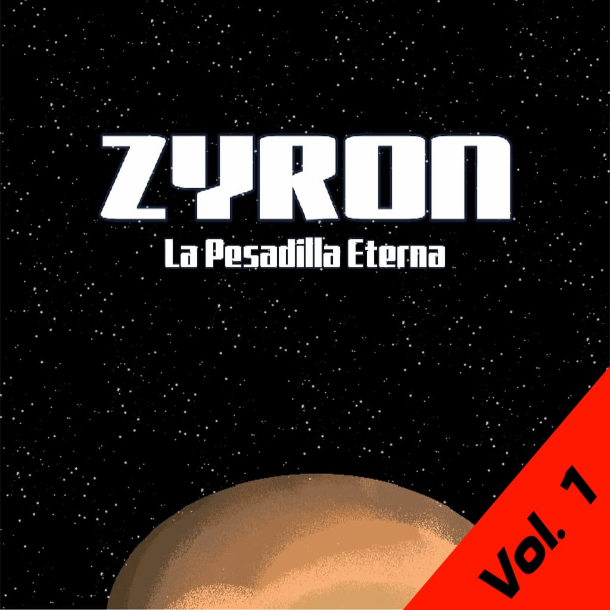

Sobre Galaxarc
Galaxarc es una plataforma de juegos en línea con temática espacial, diseñada para llevarte a mundos que combinan nostalgia y modernidad. Con tres juegos principales: Zyron: La Pesadilla Eterna, Hoshi Saga Collections, y STARS, ofrecemos una mezcla de aventuras envolventes que abordan el misterio, la habilidad y el recuerdo de experiencias icónicas. Ya sea enfrentándote a los desafíos oscuros y complejos de Zyron, explorando los ingeniosos rompecabezas de Hoshi Saga, o recolectando estrellas en el dinámico juego arcade de STARS, en Galaxarc encontrarás un juego que despierta tu curiosidad y habilidades.
Nuestra plataforma está diseñada para ser accesible, sin descargas ni instalaciones, permitiendo que cualquiera, en cualquier navegador, pueda sumergirse en el universo Galaxarc y redescubrir el placer de jugar.
Zyron: La Pesadilla Eterna

Zyron: La Pesadilla Eterna es una experiencia de juego envolvente y perturbadora, que reta a los
jugadores a escapar de una espiral de terror psicológico. Ambientado en un complejo de investigación
abandonado en el planeta Zyron, este juego combina elementos de misterio, horror y estrategia. Los
jugadores deben enfrentarse a escenarios oscuros, resolver acertijos complejos y superar desafíos
mentales para sobrevivir y avanzar. Cada rincón esconde secretos inquietantes y criaturas misteriosas
que te mantendrán en tensión constante.
Mientras exploras los escenarios, el ambiente de Zyron te
sumerge en una atmósfera cargada de suspenso,
donde cada elección cuenta y cada paso puede llevarte más cerca del peligro o de la salvación. El
objetivo final es escapar del ciclo interminable de pesadillas, pero solo los jugadores más estratégicos
y con nervios de acero lograrán desentrañar los secretos de este enigmático planeta y escapar con vida.
Hoshi Saga Collections

Hoshi Saga Collections es una serie de minijuegos de rompecabezas inspirados en el icónico Hoshi Saga,
que invita a los jugadores a encontrar una estrella en cada nivel de formas inesperadas y desafiantes.
Cada rompecabezas es una pequeña obra de arte, diseñada para estimular tu creatividad y lógica a través
de soluciones poco convencionales. Con gráficos minimalistas y un diseño ingenioso, cada nivel te
sumerge en una experiencia única, llena de sorpresas y giros inesperados.
La simplicidad de los
controles contrasta con la profundidad de cada desafío, logrando que cada
rompecabezas sea una experiencia memorable. Hoshi Saga Collections te reta a pensar más allá de lo
obvio, usando la intuición y la experimentación para descubrir la solución. Ideal tanto para nostálgicos
de los juegos Flash originales como para quienes buscan un desafío cerebral en un formato accesible.
STARS

STARS es un vibrante juego arcade que combina velocidad y precisión en un desafío constante por
recolectar estrellas mientras esquivas a través de obstáculos y niveles progresivamente más complicados.
Este juego te sumerge en reflejos rápidos, en la que cada estrella cuenta y
cada segundo puede ser decisivo.
La simplicidad del objetivo contrasta con la intensidad de la acción: deberás esquivar bombas,
y enfrentar oleadas de desafíos cada vez más exigentes. Con controles fluidos y una
jugabilidad adictiva, STARS es ideal tanto para sesiones rápidas como para quienes buscan dominar cada
nivel y mejorar sus habilidades. Perfecto para los amantes de la acción retro y aquellos que disfrutan
de una experiencia arcade directa y emocionante.